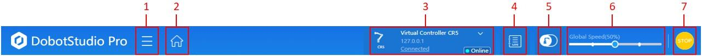
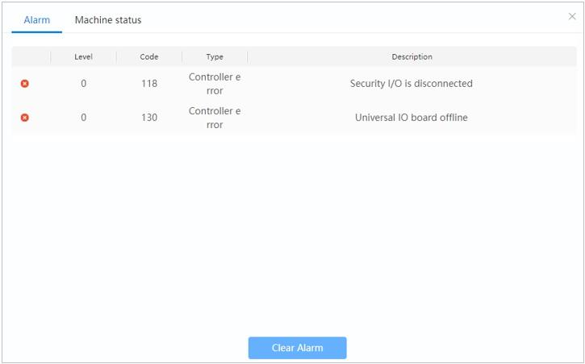
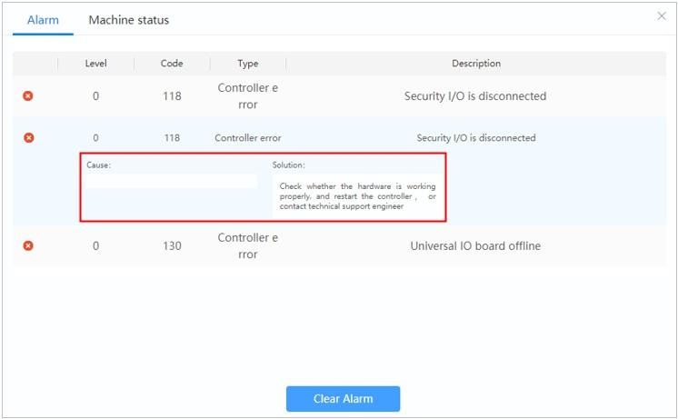
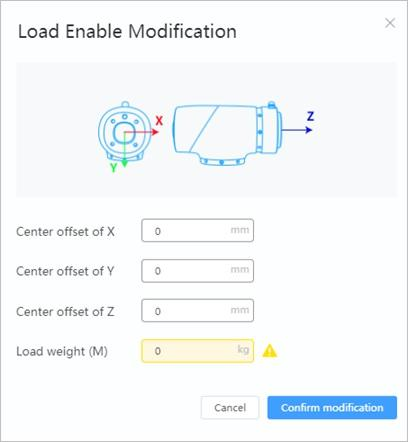

Top Toolbar
Toolbar Overview
| No. | Description |
|---|---|
| 1 | Dropdown menu containing the following submenus:
|
| 2 | Return to the Main Interface |
| 3 | Connection panel. See Connecting to the Robot for details. Settings <>`. |
| 4 | Alarm log |
| 5 | Enable robot. See Enabling Status for details. |
| 6 | Global Speed Ratio slider. Sets the speed of the robot during operation. See Jog Setting for details on calculation of the robot’s speed. |
| 7 | Emergency Stop button. See Emergency Stop button for details. |
Alarm Log
Alarms can be raised for various reasons including collisions, invalid IK solutions, singularities, and over-temperature. If an alarm is raised when the robot is running, it will stop execution of whatever program is running and the Alarm Log icon will update to show the number of alarms.
Check the status of the Alarms by clicking on the Alarm Log icon. You will be brought to the Alarm Log page.
Double click on an alarm to view the cause and solution. Once an alarm is solved, press the Clear Alarm button to clear it. You can then resume normal operation of the robot.
Enabling Status
The Enable Robot button’s color corresponds to the robot’s status:
| Color | Icon | Status |
|---|---|---|
| Solid Blue | Robot is disabled | |
| Solid Green | Robot is enabled | |
| Flashing Blue | Robot is in drag mode |
Solid Blue
Indicates that the robot is disabled. Click the Enable Robot button to be brought to the Load Enable Modification form. Here you will enter the relative position and weight of any end tooling attached to the robot. After setting the parameters, click Confirm Modification to enable the robot. The arm will move slightly during its startup routine. After the routine, the Enable Robot button and the indicator light at the end of the arm will turn green, indicating that the robot is enabled.
Note
The Eccentric coordinate of the end load should be set when the J6 axis is 0°.
Caution
The load value should not exceed the maximum payload of the robot.
Solid Green
Indicates that the robot is enabled. Click the Enable Robot button to disable the robot after confirming your intent. After the confirmation, the robot will disable. The Enable Robot button and the indicator light at the end of the arm will turn blue, indicating that the robot is disabled.
Flashing Blue
Indicates that the robot is in drag mode. In this mode, you are unable to disable the robot or operate it normally via projects, the Jog panel, etc. The robot must be put back into the enabled state first.
Emergency Stop Button
When the Emergency Stop button is pressed, the robot will stop operation and power off. The Emergency Stop icon will turn red. To re-enable the robot, press the Emergency Stop button again, power on the robot, and enable it using the Robot Enable button.
Note
If the physical emergency stop button is pressed, the Emergency Stop button will not change appearance. Before clearing the Emergency Stop alarm, the physical button must be reset, typically by turning it clockwise.